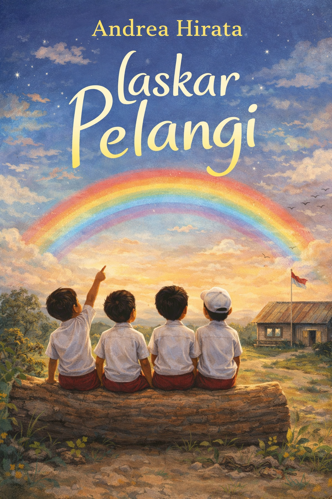
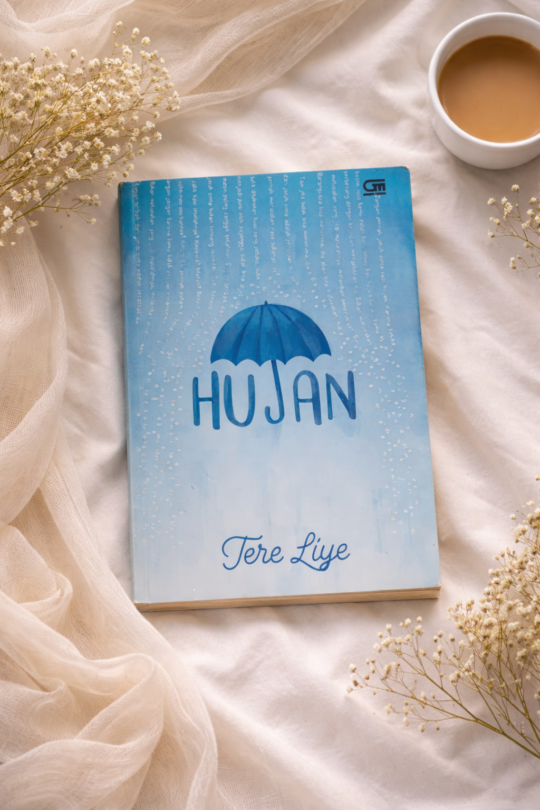

Bedah Buku: Negeri 5 Menara
Ditulis oleh: Ahmad Fuadi

Buku ini menceritakan perjalanan hidup Alif, seorang anak Minang yang menempuh pendidikan di pondok pesantren Madani. Awalnya penuh keraguan, namun perlahan Alif menemukan makna perjuangan, persahabatan, dan kekuatan impian.
“Man Jadda Wajada – Siapa yang bersungguh-sungguh, dia akan berhasil.”
Kalimat itu menjadi semangat utama dalam buku ini. Kisah yang ditulis berdasarkan pengalaman nyata ini sangat menginspirasi, terutama bagi pelajar yang sedang mengejar mimpi mereka. Penulis berhasil menyampaikan pesan-pesan moral melalui narasi yang hidup.
Buku ini cocok dibaca oleh remaja dan orang dewasa yang sedang mencari motivasi hidup. Cerita persahabatan, perjuangan, dan cinta belajar membuatnya menyentuh dan relevan bagi pembaca di berbagai usia.
Bedah Buku: Laskar Pelangi
Ditulis oleh: Andrea Hirata

Buku ini mengisahkan perjuangan sekelompok anak di Belitung yang tetap semangat bersekolah meskipun dengan fasilitas yang sangat sederhana. Tokoh Ikal dan sahabat-sahabatnya menunjukkan bahwa keterbatasan bukan alasan untuk berhenti bermimpi.
“Bermimpilah setinggi langit, jika engkau jatuh, engkau akan jatuh di antara bintang-bintang.”
Melalui cerita yang penuh haru dan semangat, pembaca diajak memahami arti persahabatan, kerja keras, dan pentingnya pendidikan. Gaya bahasa yang ringan membuat cerita ini mudah dipahami dan tetap menyentuh hati.
Buku ini sangat cocok untuk remaja maupun orang dewasa yang membutuhkan motivasi dan inspirasi dalam menghadapi tantangan hidup.
Bedah Buku: 5 CM
Ditulis oleh: Donny Dhirgantoro
Buku ini menceritakan persahabatan lima sahabat yang telah bersama selama bertahun-tahun. Suatu hari mereka memutuskan untuk tidak bertemu selama tiga bulan demi menemukan kembali mimpi dan tujuan hidup masing-masing.
“Taruh mimpi itu 5 cm di depan keningmu, dan jangan pernah lepas dari pandanganmu.”
Kisah perjalanan mereka menuju puncak Mahameru menjadi simbol perjuangan, keberanian, dan arti sebuah impian. Cerita ini mengajarkan bahwa mimpi harus diperjuangkan dengan tekad, kerja keras, dan keyakinan yang kuat.
Buku ini cocok dibaca oleh remaja dan dewasa yang sedang mencari motivasi serta ingin memahami arti persahabatan dan makna perjalanan hidup.
Bedah Buku: Dilan 1990
Ditulis oleh: Pidi Baiq

Novel ini menceritakan kisah remaja SMA bernama Milea yang bertemu dengan Dilan, sosok siswa yang unik, percaya diri, dan penuh cara tak biasa dalam mendekati seseorang. Cerita berlatar tahun 1990 ini menghadirkan suasana sekolah yang hangat dan penuh kenangan.
“Rindu itu berat, kamu nggak akan kuat. Biar aku saja.”
Melalui alur yang ringan dan dialog yang khas, pembaca diajak merasakan dinamika pertemanan, masa remaja, serta proses mengenal perasaan dengan cara yang sederhana namun berkesan.
Buku ini cocok untuk pembaca remaja yang menyukai cerita kehidupan sekolah dengan sentuhan humor dan nostalgia.
Bedah Buku: Hujan
Ditulis oleh: Tere Liye

Novel ini mengisahkan perjalanan hidup Lail di masa depan, ketika bencana besar mengubah dunia secara drastis. Di tengah kehilangan dan perubahan, Lail belajar tentang arti bertahan, melupakan, dan menerima kenyataan.
“Tidak semua kenangan harus dihapus, kadang cukup diterima dan dibiarkan menjadi pelajaran.”
Cerita ini memadukan unsur sains, emosi, dan refleksi kehidupan yang membuat pembaca ikut merasakan pergulatan batin tokohnya. Alur yang menyentuh menjadikan novel ini penuh makna dan pesan moral.
Buku ini cocok dibaca oleh remaja dan dewasa yang menyukai cerita fiksi dengan sentuhan drama dan perenungan tentang kehidupan.